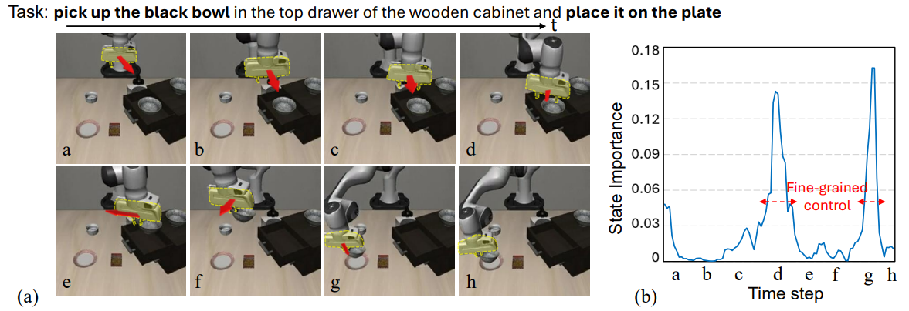
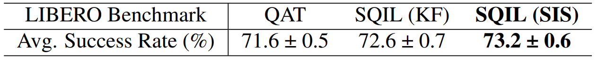
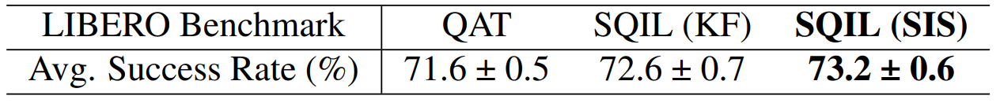
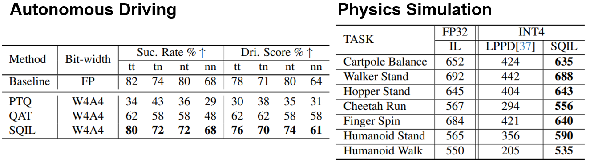
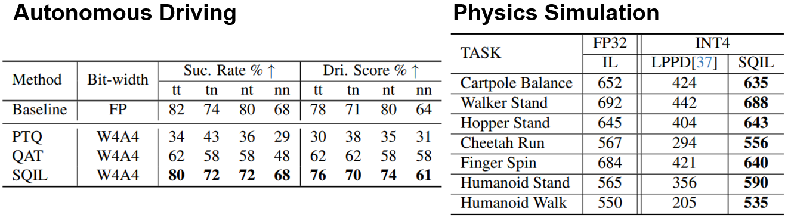
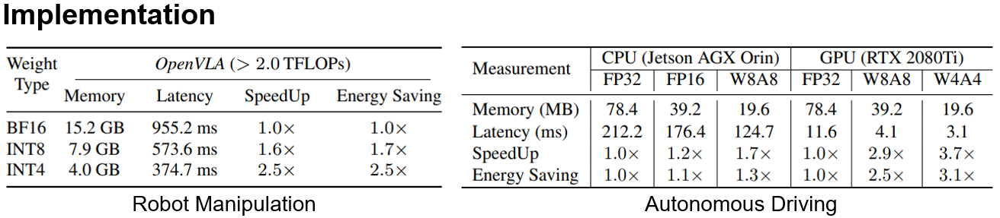

Abstract
Deep neural network (DNN)-based policy models, such as vision-language-action (VLA) models, excel at automating complex decision-making from multi-modal inputs. However, scaling these models greatly increases computational overhead, complicating deployment in resource-constrained settings like robot manipulation and autonomous driving. To address this, we propose Saliency-Aware Quantized Imitation Learning (SQIL), which combines quantization-aware training with a selective loss-weighting strategy for mission-critical states. By identifying these states via saliency scores and emphasizing them in the training loss, SQIL preserves decision fidelity under low-bit precision. We validate SQIL's generalization capability across extensive simulation benchmarks with environment variations, real-world tasks, and cross-domain tasks (self-driving, physics simulation), consistently recovering full-precision performance. Notably, a 4-bit weight-quantized VLA model for robotic manipulation achieves up to 2.5x speedup and 2.5x energy savings on an edge GPU with minimal accuracy loss. These results underline SQIL's potential for efficiently deploying large IL-based policy models on resource-limited devices.
Key Ideas & Method
Quantization compresses policy parameters to low-bit precision, reducing compute and memory. Given full-precision weights \( w^{\text{FP}} \), we apply symmetric uniform quantization:
This enables a quantized policy \( \pi^Q_\theta \) that is efficient, but incur performance loss at high-sensitivity states.
To detect such mission-critical states, SQIL computes a Saliency-based Importance Score (SIS):
where \( \phi(s_t, k) \) introduces a local state perturbation at location \(k\). High SIS indicates strong sensitivity in decision-making. 
SQIL integrates this signal into a saliency-weighted imitation objective:
This allows the quantized policy to focus on states where quantization has the most critical effect, achieving full-precision-like performance even at 4-bit.
 

Keyframe (KF) methods identify coarse transitions (e.g., "drawer open") using object state or vision-language cues. SIS captures finer interaction moments like grasping or releasing?by measuring control sensitivity, improving performance under quantization (+1.1% over KF).
Experiments
 

Despite operating under 4-bit quantization, SQIL outperforms other quantized baselines and matches full-precision performance across real-world and cross-domain tasks, demonstrating its robustness and generality.
Rollout Videos
Real-World Robot Manipulation: Qunatized OpenVLA
Simulation-based Robot Manipulation: Quantized OpenVLA on LIBERO Benchmark
Autonomous Driving: Quantized CILRS on NoCrash-dense Benchmark
BibTeX
@article{park2025saliency,
title={Saliency-Aware Quantized Imitation Learning for Efficient Robotic Control},
author={Park, Seongmin and Kim, Hyungmin and Jeon, Wonseok and Yang, Juyoung and Jeon, Byeongwook and Oh, Yoonseon and Choi, Jungwook},
journal={arXiv preprint arXiv:2505.15304},
year={2025}
}